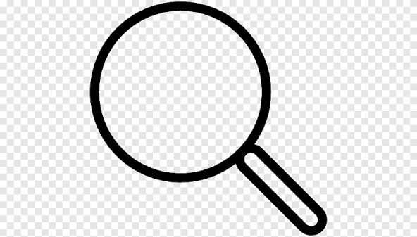
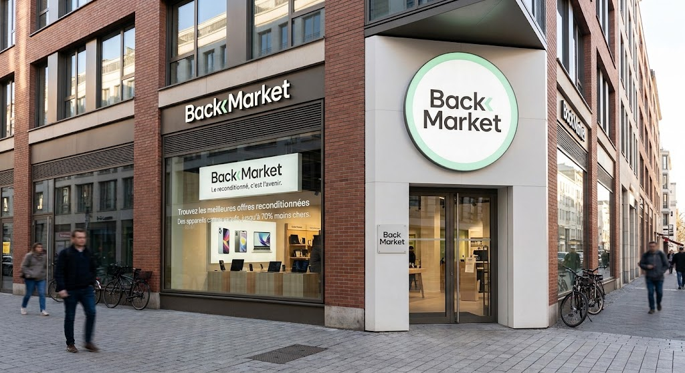

Back
Market
Accueil
Présentation
Analyse économique et financière
Impact économique et écologique


Trouvez les meilleures offres reconditionnées
Des appareils comme neufs, jusqu'à 70% moins chers.
Sources et Références
ADEME (2022):
Etude de l'impact environnemental de l'évaluation du reconditionnement des équipements électriques et électroniques.
Etude FEVAD:
Chiffre clés du e-commerce et de la seconde vie des produits en France.